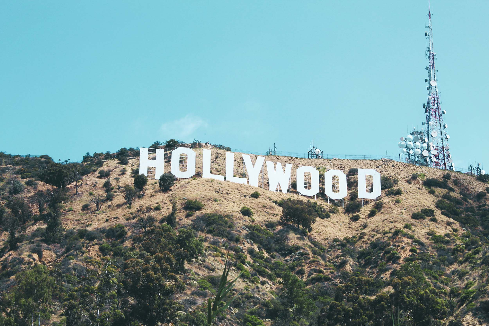
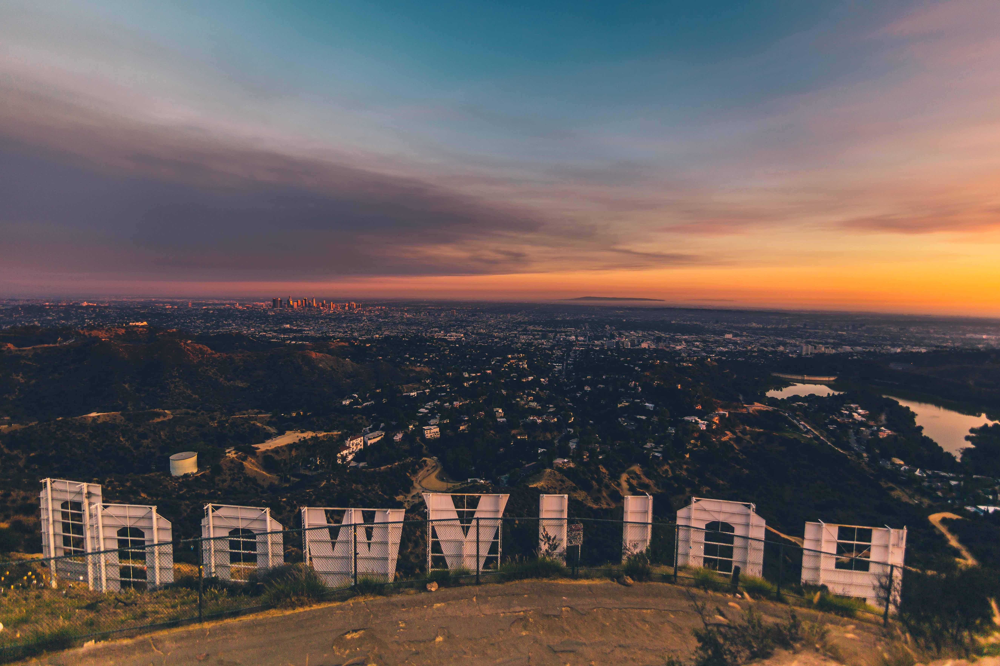

Los Angeles is a beautiful county in the state of California. It is the most populous city in the state of California. Los Angeles had roughly 3.9 million residents as of 2020. The climate in Los Angeles has a Mediterranean climate. A dry summer climate, with wet winters. There are a few primary spots in Los angeles. A couple of them are: the Skyline of Downtown L.A., the Hollywood Sign, Echo Park, Calle Olvera, Los Angeles City Hall, Griffith Observatory and Venice beach. Out of these primary spots I have been to:
The Griffith Observatory
The Griffith Observatory is an iconic and historic landmark. This landmark is perched on the southern slope of Mount Hollywood in Griffith Park. The observatory offers breathtaking panoramic views of the Los Angeles skyline and is a popular destination. The architecture is a blend of Art Deco and Greek Revival styles. The observatory features white concrete columns, this is a feature that repeatedly comes back in the Greek art and architecture. The observatory was opened to the public in 1935. It has since served as an important center for public astronomy, scientific exhibitions etc. The history of the universe, the stars, planetarium shows, and space exploration are being studied at the observatory. There is an array of telescopes available for public use. Because of the telescopes the visitors can observe celestial objects and phenomena such as planets, stars, and the moon etc. The visitors are always guided by knowledgeable staff members, the staff members offer explanations and insights. Aside from its scientific offerings, the observatory's location allows visitors to enjoy the surrounding hiking trails, stunning views, and nature. It has been featured in numerous films and series. I have seen this location in the show lucifer and movies like Jurassic Park, Charlie's angels etc. It was crazy to see the spots where I've been back in shows and movies, knowing that some of the actors I watch have been at the same places as me.
The Hollywood Sign
From the Mount Hollywood in Griffith Park, you can see the amazing known Hollywood Sign. Hollywood is known for its entertainment industry, when most people think about Hollywood, they either think about the Hollywood Signs or the famously known celebrity stars. The sign was originally created in 1923 as an advertisement for a real estate development called “Hollywood land”. The letters are made of 45-foot-tall white capital corrugated metal, spelling out the word “Hollywood”. The Hollywood sign is positioned on the face of Mount Lee in the Hollywood Hills, with a stunning view. When I went hiking on to the Griffith observatory, I saw the beautiful sign. And on the other side the gorgeous view of the city of Los Angeles. Of course, like every other tourist I wanted to get closer to the sign but access to the sign itself is restricted. However, you can get a good view from several hiking trails and viewpoints.


The Glendale Galleria & The Americana at brand
On the daily the Glendale Galleria and the Americana at Brand are two popular shopping & entertainment destinations located in Glendale, California. During the holidays these 2 malls are beautifully decorated, with huge decorations. The Glendale Galleria is a large indoor shopping mall, it has been known for its extensive selection of shops and boutiques. Every time I have been to Glendale, la I have been to this mall. It has almost every shop you can think of. The American classics like target, food courts etc. Connected to the Glendale Galleria is The Americana at Brand. Americana is a luxurious outdoor dining, shopping complex. It has been developed by the same company that developed The Grove in Los Angeles, which is another luxurious mall with beautiful decorations. The Americana at Brand owns more expensive luxurious stores then Glendale Galleria. It has a green space, a well-designed cinema, with dancing fountains and decorations. It has a beautiful European-inspired ambience. The Americana at Brand is a place of its own. I love walking here during the holidays, hearing the Christmas music and seeing people live, laugh and love.
Will Rogers State Beach
Will Rogers State Beach is one of the popular beaches located in the Pacific Palisades, Los Angeles. This beach is named after the American humorist and actor Will Rogers. This beach offers beautiful sunset views and stunning views of the Santa Monica Mountains. I have been here on December 18th of 2021. I went there with my cousins and some delicious food we got at a famous spot nearby. The sound of the waves and the beautiful sunset gives me a very calm and relaxing feeling. We got pull out chairs, sat on the beach and talked about our lives. This is one of my favorite core memories, that I will remember forever.
Van Gogh Art Exhibition
In the famous Los Angeles, there are many art exhibitions, one of my favorite ones that I have been to myself is the Van Gogh exhibition. I am from the Netherlands, just like the artist van Gogh. It was cool to see his art in L.A. The exhibition consisted of two huge rooms where the art of Van Gogh was displayed on the walls, just like a video. In the background classical music of different various artists was playing. And during the show they gave some people fake sunflowers. On the ground there were circles placed where people could sit, some people came with their kids and others went as duos. I was at the exhibition with my cousins and aunts. I took many pictures and video's here; I recommend this experience to anyone who likes arts and shows.
Hollywood
Hollywood is known as the heart of the entertainment industry. Hollywood is worldwide known for its film and television productions, symbolizes the glamour, creativity, and allure of the movie-making world. As we talked about the Hollywood sign is the sign of Hollywood. Hollywood is known for the iconic Hollywood sign, the Walk of Fame and historic theaters that have hosted countless movie premieres. The area Hollywood is home to major film studios. The major film studios that can be see there include Paramount Pictures, Universal Studios, Warner Bros etc. Hollywood is also known for its nightlife, with a bustling urban district, many historical landmarks, trendy restaurants etc. is this the perfect place to visit as a tourist.
My experience in Hollywood was great. It was like walking in a new world, it is very different than other parts of Los Angeles. It was very busy with people walking everywhere. People dressed up as characters and taking pictures with others, movie premieres going on. The Walk of Fame stars that displayed different personalities and celebrities was very long, the streets were filled with stars where you could walk for hours. The stars are usually displayed with a name and an icon, the icon stands for the reason this person got famous.
An interesting thing about the Walk of Fame is that some stars are still empty. There were a couple of people that offered a picture with your own name displayed on an empty star. Me and my family did this activity. It was very expensive; I think 2 dollars for one letter, so it ended up being around 20 dollars per person. I chose a microphone because I love singing. After the man displayed the letters, we took pictures. I think this is such a genius business model, just placing a couple of plastic letters that look like the Hollywood letters makes you a lot of money.
Favorite Food & Drink Spots
One of my favorite foods to eat in Los Angeles is bagels. There are two spots I always get them from Noah's New York Bagels and Starbucks. Noah's New York bagels makes freshly baked bagels that sell out quickly. The spot I go to is in Burbank. I am someone that likes a classic bagel, a plain bagel with cream cheese. But they have a lot more kinds. The bagels at Starbucks are also delicious, crispy on the outside soft on the inside. The bagels in the Netherlands are a lot different than the bagels of the USA, I think it has something to do with the flour. I have tried making American bagels so many times already, but it never turns out the same.
My two favorited drinks at Starbucks are: A strawberry acai no lemonade light ice and a caramel frap. You can wake me up in the middle of the night with a strawberry acai and a heated-up bagel with cream cheese. Highly recommend!
Chick-Fil-A and In' n Out burger are my two favorite spots for French fries. Both very different, but very good. The Chick-Fil-A fries are in a waffle type of form, paired with their ranch a delicious meal. The In' n Out fries are freshly cut, and amazing with their ranch. The thing about American fast food is that it is often not well prepared because they must make a lot of it, but I can guarantee that these spots are well made.
To conclude this chapter, I love Los Angeles and the USA. I highly recommend to visit!